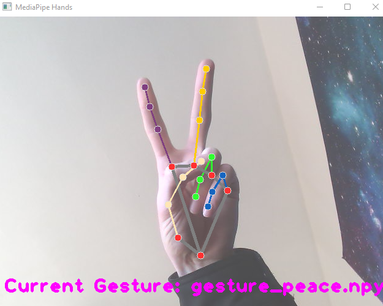

Gesture Recognition
Real-time finger tracking, gesture recognition, and robotic hand control.


I undertook the challenge of implementing real-time gesture recognition and robotic hand control from a camera feed.
Using OpenCV and MediaPipe, I tracked the state of a hand within the camera frame. To classify gestures, I constructed a vector from the coordinates of key hand points and compared it against recorded gestures using cosine similarity to find the closest match.
This approach performed reliably and was able to differentiate between a range of gestures, including a peace symbol, closed fist, thumbs up, and others.
Building on this, I extended the framework to control a robotic hand directly from the camera feed. The tracked finger coordinates were transformed into control signals that allowed the robotic hand to mirror the user’s movements in real time.
To support different hand sizes, I implemented a setup mode where the user performed calibration actions such as splaying their hand and closing their fist. These measurements were used to determine joint scaling and establish a consistent mapping between input motion and actuator output.
The system interfaced with a Raspberry Pi 3 via serial communication, which executed the commanded movements. The full pipeline operated with less than one second of delay, enabling responsive real-time control.